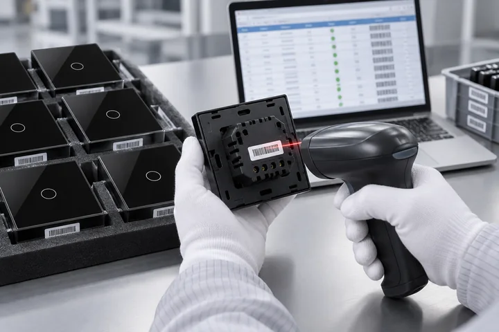

We implement a comprehensive quality control system throughout our manufacturing process, ensuring every product meets high standards of quality, safety and reliability for homes and buildings.
01 / Inspection overview
Quality is built into the process.
From incoming components to the finished product, inspection points help connect product requirements with the manufacturing process.
Illustrative process image. Inspection scope depends on the product and agreed requirements.
01 / Incoming
Start with the components.
Component identificationReview component identity and the applicable product requirements.
Appearance & conditionCheck visible condition and the details relevant to assembly.
Inspection informationIdentify the inspection items and information required for review.
Illustrative process image. Inspection scope depends on the product and agreed requirements.
02 / In Process
Check where the product takes shape.
Electronics & connectionsReview the assembly points relevant to the product.
Structure & alignmentCheck housing, frame and panel fit at the appropriate stage.
Process reviewKeep inspection points connected to the manufacturing stage.
Illustrative process image. Inspection scope depends on the product and agreed requirements.
03 / Finished Product
Review the complete product.
AppearanceReview panel condition, alignment and product identification.
FunctionUse inspection items appropriate to the product and version.
Packaging preparationReview the product information and items needed for delivery.

Illustrative process image. Inspection scope depends on the product and agreed requirements.
04 / Release Review
Bring the checks together.
Product & versionCheck that the reviewed product matches the intended version.
Inspection statusReview the relevant inspection information and open issues.
Outstanding issuesClarify unresolved items before the delivery decision.
02 / Control matrix
The right check. At the right stage.
A clear view of the inspection objects, review areas and information associated with each control point.
Control point
Inspection object
Review areas
Information to review
Incoming
Components, panels and structural parts
Identity, visible condition and applicable requirements
Component details and inspection items
In process
Electronic modules and assembled parts
Connections, fit and assembly condition
Process stage and inspection findings
Finished product
Complete product and delivery items
Appearance, applicable functions and identification
Product version and review status
Release review
Product and relevant inspection information
Inspection status and outstanding issues
Review outcome and follow-up items
Inspection methods, sampling arrangements and acceptance criteria depend on the product and agreed requirements. This overview does not specify a universal test standard.
03 / Exception review
Identify. Review. Resolve.
A structured review path keeps an issue connected to its product, corrective action and verification.
01 / IDENTIFY
Describe the issue
Identify the affected object and describe the observed condition.
02 / REVIEW
Assess the next step
Review the issue and determine the appropriate handling route.
03 / VERIFY
Review the correction
Check the relevant items again after the required action.
04 / CLOSE
Confirm the outcome
Keep the review outcome connected to the inspection information.
04 / Inspection information
Make the review easy to follow.
Product identification, inspection scope and review status provide context for understanding a quality check.
What should an inspection summary explain?
The product and version, the stage being reviewed, the relevant inspection items and any issues requiring follow-up.
Where can I find more about testing?
The testing and traceability page provides the next entry point for product testing and record-related information.
ILLUSTRATIVE RECORD STRUCTURE
Inspection summary
Product identificationModel / version
Inspection contextStage / scope
Review informationItems / findings
Follow-upAction / review status
Structure example only. This is not an actual inspection record or test result.
05 / Explore further
Follow the details.
Explore the manufacturing process and the information behind product testing.